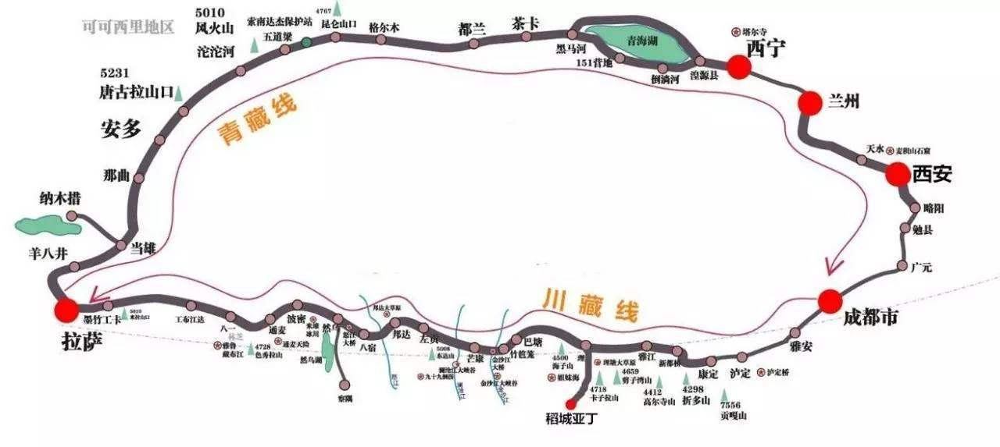

注意事项
1、有严重高血压、心脏病患者不宜去西藏，请不要带严重的感冒进藏。
2、西藏地处高原，大部分客人会或多或少有高原反应，只要注意休息饮食得当（切勿吃的太饱，增加肠胃负担），自然会克服；可适当服用一些药品，如：高原安、红景天、诺迪康等，严重者可适当吸氧，或吊盐水。
3、鉴于现在西藏的特殊情况，请客人注意安全，切记不要私自脱离团队或改变行程；贵重财物请寄在宾馆前台，不可放在房间，晚上出去游玩请结伴同行，务必在晚上12：00点之前回宾馆，以免影响第二天的行程。
4、由于西藏线路长，许多时间是在车上，难免不能按时吃饭，请客人带一些零食及饼干，西洋参可帮您提神，可捎带一些。
5、由于西藏条件特殊，故请客人注意自身保暖，第一天请尽量不要洗澡，以免感冒。
6、西藏早晚温差较大，温度较低，请务必带上羊毛衫、厚外套、牛仔裤等，注意保暖。
7、西藏日照强烈，气候尤其干燥，防晒霜、墨镜、润唇膏等必不可少。
8、由于西藏的特殊情况，拉萨-日喀则、林芝、山南整个餐的风味以川菜为主，但也可根据客人的口味适当调配。
9、西藏主要地区海拔：拉萨3650米、纳木措湖4770米；林芝3040米、波密2750米、然乌湖3807米、墨脱1225米，日喀则3860米、江孜3977米、亚东2300米、定日4410米、绒布寺5100米、樟木210 0米；山南（泽当）3580米、朗县3100米；萨嘎4502米、普兰4216米、狮泉河4279米、改则4350米。
10、出行前购买足够的胶卷；数码相机备用足够内存空间。西藏布达拉宫附近有很多的相机维修加油站。